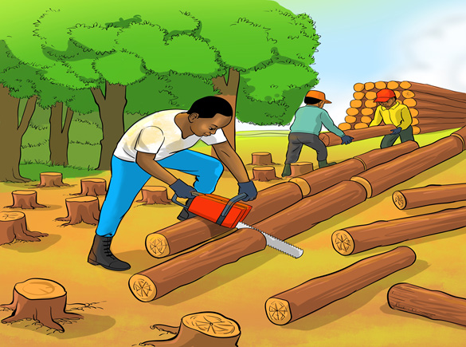

Lumbering
Lumbering is the felling of trees which can be used for domestic and commercial purposes. Trees suitable for producing timber are felled and sawn. Some of the trees commonly used to make timber are mahogany, ebony, teak, iroko, oak, pine and eucalyptus. Lumbering can be done in either natural or artificial forest. Lumbering is one of the important economic activities undertaken in forests. In Tanzania, lumbering activities are mainly carried out in the regions of Iringa, Njombe, Tabora, Lindi, Kilimanjaro and Mtwara. Figure 12 illustrates the preparation of logs for lumbering.
